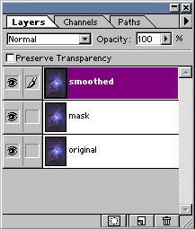
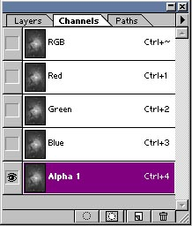

- order -
|  |
My email address isView all newsletters Video Search Results We found 203 available videos where the Category is Political Drama. .As you order, each item will be listed in Your Shopping Cart in the upper left corner. As you order, each item will be listed in Your Shopping Cart in the upper left corner. As you order, each item will be listed in Your Shopping Cart in the upper left corner. |
|  |
Also, the episodes from your favorite films in class. . Images If you read my pages in order, you know by now that director is a storyteller and has to do it in images. The question is how to arrange the primary action and secondary (camera) in such a way that you can get the dynamic visual composion (here we cross the line of the slide-presentations into montage). Questions Maybe this is the place to ask -- Why do you use zoom so often. |
|
No reproduction may be made without permission being obtained in advance. About the filmstrips and slides All filmstrips and slides are on 35 mm. Please check the Filmstrips Catalogue and the 'Series B list in numerical order' for a fuller description of items. Filmstrips and mounted slides supplied by the Bodleian are copyright and may not be reproduced unless permission has been obtained from the Library in advance. Images from items belonging to other institutions or owners also require their separate permission for publication. |
. The People in Need Foundation was established by journalists who, in addition to writing about human suffering, desired to help. PINF has not forgotten, however, the importance of documenting evidence from wars, from dictatorial and totalitarian regimes or from regions hit by natural disasters in order to let the rest of the world know what is going on. The People in Need Foundation's documentary series has been made exactly for these reasons. 2000 One World About the international film festival 18.
A site I really like: http://www.time.com/time/nation/article/0,8599,201870,00.html